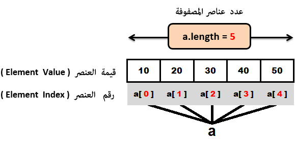

Javaالتعامل مع المصفوفات في جافا
مفهوم المصفوفات
مصفوفة: تعني Array في البرمجة. و المصفوفة عبارة عن كائن يحتوي مجموعة عناصر من نفس النوع تتخزن بجوار بعضها في الذاكرة.
بمعنى آخر المصفوفة عبارة عن كائن يمكنه تخزين عدة قيم من نفس النوع.
عناصر المصفوفة تتميز عن بعضها من خلال رقم محدد يعطى لكل عنصر يسمى index. أول عنصر فيها يتم تخزينه في الـ index رقم 0.
عدد عناصر المصفوفة ثابت, أي بمجرد أن قمت بتحديده لا يمكنك تغييره من جديد, لكنك تستطيع تغيير قيم هذه العناصر متى شئت.
فوائد الـ Array
تقليل عدد المتغيرات المتشابهة, فمثلاً إذا كنا نريد تعريف 10 متغيرات نوعهم int, نقوم بتعريف مصفوفة واحدة تتألف من 10 عناصر.
تطوير الكود, إذا قمت بتخزين المعلومات داخل مصفوفة, تستطيع تعديلهم, مقارنتهم أو جلبهم كلهم دفعة واحدة بكود صغير جداً باستخدام الحلقات.
تستطيع الوصول لأي عنصر من خلال الـ index.
المشكلة الوحيدة في الـ Array
حجمها ثابت, أي عندما تقوم بتعريف مصفوفة و تحدد عدد عناصرها, لا يمكنك تغيير حجمها لاحقاً, أي لا يمكن حذف عنصر أو زيادة واحد جديد.
هذه المشكلة تم حلها لاحقاً من خلال إطار تخزين متطور يسمى Collection ستتعرف عليه في دروس لاحقة.
مصطلحات تقنية
الفرق بين Declare Array و Create Array هو:
ملاحظة: لا تستطيع التعامل مع المصفوفة إذا لم تفعل لها Create.
تعريف مصفوفة
تعريف مصفوفة جديدة يسمى Declare Array
يمكنك تعريف مصفوفة جديدة بثلاث طرق:
// يمكنك تعريفها هكذا
datatype[] arrayRefVar; // هذا الأسلوب المفضل في جافا
// أو هكذا
datatype []arrayRefVar;
// أو هكذا
datatype arrayRefVar[];
أمثلة
// double هنا قمنا بتعريف مصفوفة ذات بعد واحد, نوعها
double[] doubleArray;
// int هنا قمنا بتعريف مصفوفة ذات بعدين, نوعها
int[][] intArray;
// String هنا قمنا بتعريف مصفوفة ذات بعد واحد, نوعها
String[] stringArray;
إنشاء مصفوفة
إنشاء مصفوفة جديدة يعني Create Array في اللغة الإنجليزية.
إذا أردت أن تعرف أي مصفوفة فعندك طريقتين:
طريقة إنشاء مصفوفة و إعطائها القيم لاحقاً
arrayRefVar = new datatype[size];
:arrayRefVar: هو إسم المصفوفة التي يجب أن تكون معرفة سابقاً.
new: تقوم بتوليد قيم أولية لجميع عناصر المصفوفة, تعطيهم القيمة صفر كقيمة أولية.
datatype: هو نوع القيم الأولية التي سيتم توليدها.
size: هو عدد عناصر المصفوفة.
طريقة إنشاء مصفوفة و إعطائها قيم أولية مباشرةً عند إنشائها
arrayRefVar = { value0, value1, ..., valuek };
تعريف مصفوفة و إعطاءها قيم أولية بكود أقل
يمكنك أن تفعل Declaring و Creating و Assigning لمصفوفة جديدة في جملة واحدة.
يمكنك تحديد عدد عناصرها فقط عند تعريفها, و عندها ستعطى القيمة صفر لجميع عناصرها كقيمة أولية.
datatype[] arrayRefVar = new datatype[size];
و يمكنك إعطائها قيم أولية مباشرةً عند تعريفها, و عندها تتخزن كل قيمة في عنصر, و هكذا يتحدد عدد عناصرها.
datatype[] arrayRefVar = { value0, value1, ..., valuek };
يمكنك الوصول لعناصر المصفوفة من خلال الـ index.
يتم تخزين عناصر المصفوفة إبتداءاً من الـ index رقم 0 إلى الـ index رقم length-1.
بمعنى آخر العنصر الأول في المصفوفة يحمل الـ index رقم 0, و العنصر الآخير فيها يحمل index رقم length-1.
ملاحظة
القيمة الإفتراضية صفر تعطى حسب نوع المصفوفة.
إذا كان نوع المصفوفة int أو longالقيمة الإفتراضية التي ستعطى لجميع عناصر المصفوفة هي 0.
إذا كان نوع المصفوفة double أو floatالقيمة الإفتراضية التي ستعطى لجميع عناصر المصفوفة هي 0.0.
إذا كان نوع المصفوفة String القيمة الإفتراضية التي ستعطى لجميع عناصر المصفوفة هي null.
شكل المصفوفة في الذاكرة
لنفترض الآن أننا قمنا بتعريف مصفوفة نوعها int, إسمها a, تتألف من 5 عناصر.
int[] a = { 10, 20, 30, 40, 50 };
يمكنك تصور شكل المصفوفة a في الذاكرة كالتالي.

بما أن المصفوفة تتألف من 5 عناصر, تم إعطاء العناصر أرقام index بالترتيب من 0 إلى 4.
إذاً هنا أصبح عدد عناصر المصفوفة يساوي 5 و هو ثابت لا يمكن تغييره لاحقاً في الكود.
و يمكنك إستخدام أرقام الـ index لتصل لجميع عناصر المصفوفة سواء لعرض القيم أو لتغييرها.
في المثال التالي, قمنا بتعريف مصفوفة, ثم غيرنا قيمة العنصر الأول, ثم عرضناها, من خلال الـ index الخاص بالعنصر.
بعدها, إستخدامنا الخاصية length الموجودة في جافا لطباعة عدد عناصر المصفوفة.
مثال
public class Main {
public static void main(String[] args) {
int[] a = { 10, 20, 30, 40, 50 }; // هنا قمنا بتعريف مصفوفة تتألف من 5 عناصر
a[0] = 99; // هنا قمنا بتغيير قيمة العنصر الأول
System.out.println("a[0] = " + a[0]); // هنا عرضنا قيمة العنصر الأول
System.out.println("a.length = " + a.length); // هنا عرضنا عدد عناصر المصفوفة
}
}
•سنحصل على النتيجة التالية عند التشغيل
a[0] = 99
a.length = 5
مثال شامل حول التعامل مع المصفوفات
سنقوم الآن بكتابة برنامج شامل لكل المفاهيم التي ذكرناها في هذا الدرس.
الخطوات التي سنقوم بتنفيذها هي التالية:
تعريف مصفوفة فارغة نوعها int, إسمها numbers, تتألف من 5 عناصر.
عرض قيمها الأولية باستخدام حلقة.
إعطاء قيمة لكل عنصر فيها.
عرض جميع قيمها من جديد باستخام حلقة
مثال
public class Main {
public static void main(String[] args) {
// 1- هنا قمنا بتعريف المصفوفة
int[] numbers = new int[5];
// 2- هنا قمنا بعرض قيم جميع عناصرها
for(int i=0; i<numbers.length; i++)
{
System.out.println("numbers[" + i + "]: " + numbers[i]);
}
// 3- هنا قمنا يتغيير قيم جميع عناصرها
numbers[0] = 1000;
numbers[1] = 2000;
numbers[2] = 3000;
numbers[3] = 4000;
numbers[4] = 5000;
System.out.println();
// 4- هنا قمنا بعرض قيم جميع عناصرها
for(int i=0; i<numbers.length; i++)
{
System.out.println("numbers[" + i + "]: " + numbers[i]);
}
}
}
•سنحصل على النتيجة التالية عند التشغيل
numbers[0]: 0
numbers[1]: 0
numbers[2]: 0
numbers[3]: 0
numbers[4]: 0
numbers[0]: 1000
numbers[1]: 2000
numbers[2]: 3000
numbers[3]: 4000
numbers[4]: 5000
الحلقة foreach
إبتداءاً من الإصدار 1.5 في جافا, قدم لنا حلقة for جديدة إسمها foreach loop.
هذه الحلقة تسمح لك بالمرور على جميع عناصر المصفوفة دون الحاجة لتعريف عداد و تحديد أين يبدأ و أين ينتهي.
طريقة تعريف الحلقة foreach
في البداية نحن لا نكتب foreach بل نكتب for.
الإختلاف بين foreach و for التقليدية يظهر فقط بين القوسين, لاحظ الـ syntax.
for( element: array ) {
// statements
}
element: هو متغير عادي نقوم بتعريفه بداخل الحلقة و نعطيه نفس نوع المصفوفة التي نضعها بعد النقطتين, لأنه في كل دورة سيقوم بتخزين قيمة عنصر من عناصرها, لذلك يجب وضع نوعه مثل نوعها.
array: هي المصفوفة التي نريد الوصول لجميع عناصرها.
statements: هي جميع الأوامر الموضوعة في الحلقة و هي تتنفذ في كل دورة.
إذاً هنا تقوم الحلقة بالمرور على جميع عناصر المصفوفة بالترتيب من العنصر الأول إلى العنصر الأخير, و في كل دورة تقوم بتخزين قيمة العنصر في المتغير الذي قمنا بتعريفه.
سنقوم الآن بكتابة برنامج بسيط يعرض قيم جميع عناصر مصفوفة باستخدام الحلقة foreach.
مثال
public class Main {
public static void main(String[] args) {
// هنا قمنا بتعريف المصفوفة
int[] numbers = { 1000, 2000, 3000, 4000, 5000 };
// element في المتغير numbers هنا في كل دورة سيتم تخزين قيمة عنصر من عناصر المصفوفة
for(int element: numbers)
{
System.out.println(element); // element هنا سيتم عرض القيمة التي تخزنت في المتغير
}
}
}
•سنحصل على النتيجة التالية عند التشغيل
1000
2000
3000
4000
5000
تعامل الدوال مع المصفوفات
سنتكلم الآن عن نقتطين أساسيتين:
تمرير المصفوفة كـ argument للدالة
سنقوم بتعريف دالة تأخذ مصفوفة كباراميتر, مهمة هذه الدالة ستكون فقط طباعة جميع قيم عناصر المصفوفة.
ثم سنقوم بإستدعاء هذه الدالة مرتين, لأننا سنعلمك طريقتين لتمرير مصفوفة كـ argument.
مثال
public class Main {
// 1- argument هنا قمنا بتعريف دالة تطبع محتوى أي مصفوفة نمررها لها كـ
public static void printArray(int[] array) {
for (int i=0; i<array.length; i++) {
System.out.print(array[i] + " ");
}
}
public static void main(String[] args) {
// 2- هنا قمنا بتعريف مصفوفة
int[] numbers = { 1000, 2000, 3000, 4000, 5000 };
// 3- هنا قمنا باستدعاء الدالة و مررنا لها المصفوفة
printArray(numbers);
System.out.println();
// 4- هنا قمنا باستدعاء الدالة و أنشأنا مصفوفة بداخلها. ستفهم هذا الأسلوب في دروس لاحقة
printArray(new int[] {11, 12, 13, 14, 15});
}
}
•سنحصل على النتيجة التالية عند التشغيل
1000 2000 3000 4000 5000
11 12 13 14 15
تعريف دالة ترجع مصفوفة
سنقوم بتعريف دالة تأخذ مصفوفة كباراميتر و ترجعها معكوسة, ثم سنقوم بإستدعاء هذه الدالة.
ستلاحظ أننا قمنا بتعريف عدادين في الحلقة for, لأننا أردننا أن نلفت إنتباهك أيضاً أنه بإمكانك تعريف أكثر من عداد بداخل الحلقةfor.
مثال
public class Main {
// 1- بالمقلوب argument هنا قمنا بتعريف دالة ترجع محتوى المصفوفة نمررها لها كـ
public static int[] reverseArray(int[] array) {
int[] result = new int[array.length];
for (int i=0, j=result.length-1; i<array.length; i++, j--) {
result[j] = array[i];
}
return result;
}
public static void main(String[] args) {
// 2- هنا قمنا بتعريف مصفوفة
int[] numbers = { 1000, 2000, 3000, 4000, 5000 };
// 3- بالمقلوب numbers هنا قمنا بتعريف مصفوفة فارغة, سنستخدمها لحفظ قيم المصفوفة
int[] reversedNumbers;
// 4- reversedNumbers هنا قمنا بتخزين المصفوفة المقلوبة التي سترجعها الدالة في المصفوفة
reversedNumbers = reverseArray(numbers);
// 5- للتأكد فقط reversedNumbers هنا بعرض قيم المصفوفة
for (int i=0; i<reversedNumbers.length; i++) {
System.out.print(reversedNumbers[i] + " ");
}
}
}
•سنحصل على النتيجة التالية عند التشغيل
5000 4000 3000 2000 1000
دوال جاهزة للتعامل مع المصفوفات
الكلاس Arrays هو كلاس جاهز في جافا, يحتوي على دوال نوعها static تطبق على جميع أنواع البيانات البدائية و تستخدم للترتيب, البحث, المقارنة, و لإعطاء قيم لعناصر المصفوفة, ذكرنا لك بعضها في هذا الجدول.
| إسم الدالة مع تعريفها |
public static boolean equals(Object[] a1, Object[] a2)
تقارن المصفوفتين اللتين نمررهما لها مكان الباراميترين a1 و a2.
ترجع true إذا كانتا متساويتين في الحجم و المحتوى. غير ذلك ترجع false.
تابع القراءة » |
public static void sort(Object[] a)
ترتب قيم المصفوفة التي نمررها لها مكان الباراميتر a بشكل تصاعدي (ascending).
تابع القراءة » |
public static void fill(Object[] a, Object val)
تستخدم لوضع قيمة أولية في جميع عناصر المصفوفة.
مكان الباراميتر a نمرر المصفوفة التي سيتم وضع قيم أولية لعناصرها. و مكان الباراميتر val نمرر القيمة التي سيتم وضعها لهم.
تابع القراءة » |
الكلاس System يحتوي أيضاً على دوال للتعامل مع المصفوفات, نذكر منها.
| إسم الدالة مع تعريفها |
public static void arraycopy(Object src, int srcPos, Object dest, int destPos, int length)
تستخدم لنسخ محتوى مصفوفة و وضعه في مصفوفة أخرى.
تابع القراءة » |


 محرر الويب
محرر الويب نظام الألوان
نظام الألوان محول الوحدات
محول الوحدات محلل عناوين الشبكات
محلل عناوين الشبكات